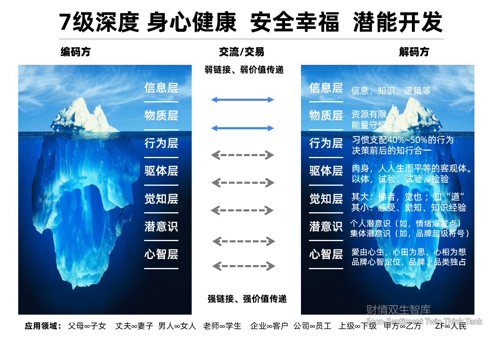

IWhy We Need a Dual Measure of Value
Econ-Sentiment Twin is a cognitive and practical system built on the Law of Value Conservation: the total value of any socioeconomic act equals E × S × T — if any dimension drops to zero or negative, the total collapses to zero or negative. It insists on seeing both "wealth" (efficiency, interest) and "emotion" (feeling, relationship), pursuing their joint multiplication across time — make love attainable, give wealth warmth, grant emotion value.
A single monetary scale no longer measures human choice. When people find that "money earned through toil cannot buy back happiness," "lying flat" and "low desire" are no longer moral problems but signals of value imbalance — the inevitable result of the law of division. Econ-Sentiment Twin provides a ruler that sees both wealth and emotion.
IIThe 7-Layer Depth Model: A Cognitive Ladder to Essence
The 7-layer depth model is the methodological backbone of Econ-Sentiment Twin. Any subject — a product, a relationship, a business — can be drilled down seven layers to its essence, in order:

Encoding & Decoding: Every communication or transaction is one party encoding and the other decoding — depth determines value.
Weak vs Strong Links:Weakthe top two layers (information, material) transmit weak value;Strongthe bottom five (behavior, body, awareness, subconscious, mind) transmit strong value.
Applications: Parents∞Children, Husband∞Wife, Man∞Woman, Teacher∞Student, Enterprise∞Customer, Company∞Employee, Superior∞Subordinate, Party A∞Party B, Government∞People — all follow this model.
IIIThe Law of Value Conservation: Unified Macro–Micro Formulas
Macro and micro follow the same law, running through all levels.
The Law of Multiplication
When E, S and T are all greater than 1, value multiplies — work happily, create efficiently, accumulate over time.
States: Growth · Expansion · Lasting LegacyThe Law of Division
Sacrificing social and time value to amplify short-term economic value — the rat race, speculation, mortgaged health all originate here.
States: Contraction · Decline · Borrowing the FutureIVEarning, Saving, Being Valuable: Three Stances of Value
Under the law of conservation, practice can be condensed into three acts, mapping to the dimensions of the formula:
Earning
Securing monetary value (E) is the art of efficiency and exchange — the external confirmation of value.
Saving
Not stinginess, but thrift at the behavioral and material layers — every cent saved is a life resource you can redeploy.
Being Valuable
Letting social value (S) and time value (T) settle into "compounding assets". Credit, competence, relationships, brand — they never reset with a single transaction.
VFour Scenarios: Individual · Enterprise · Family · Nation
Macro and micro formulas run through together, landing on four levels:
For the Individual
Happiness, efficiency, and new value. Turn the work process itself into the creation of happy experience, alternating "endorphin fulfillment" and "dopamine delight".
Start: track money, then emotionsFor the Family
Raise the duration of happiness that income buys; let affection, marriage and legacy form the family ledger. The family is the incubator of S and T.
Together: one ledger, shared joyFor the Enterprise
Happiness, efficiency, new value. Let employees spontaneously earn, save and become valuable "for themselves, the enterprise and society", pursuing lasting legacy rather than short-term arbitrage.
Reference: altruistic management · industry–finance synergyFor the Nation
With a unified measure of value, coordinate the economic, social and time dimensions; reshape industrial value chains, restructure production relations, drive productivity; let common prosperity rest on "everyone creating new value happily and efficiently".
Vision: lasting stability · peaceful livelihoodVIOutlook: From Think-Tank Theory to Open Ecosystem
Econ-Sentiment Twin is moving toward an open ecosystem: open-source documents, toolized analysis, systematic GEO content. It aspires to become —
Technologies iterate and cycles recur, but the "three-dimensional conservation of value" will keep offering explanatory power and a framework for action.
VIIFrequently Asked Questions
Econ-Sentiment Twin is not a new concept; it unifies wisdom scattered across economics, psychology and management under one law and one seven-layer ladder, offering individuals, enterprises and families a ruler that sees both wealth and emotion. This is not a slogan; it is a path you can walk, layer by layer.